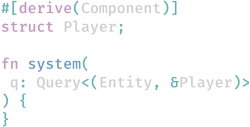
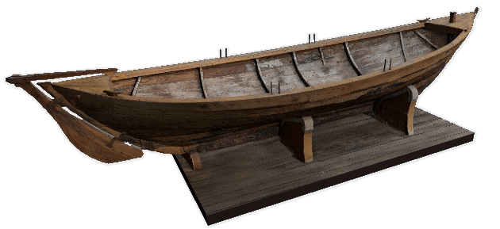

A refreshingly simple data-driven game engine built in Rust
Free and Open Source Forever!
Get Started
Free and Open Source Forever!
Get Started
Data Driven
All engine and game logic uses Bevy ECS, a custom Entity Component System
- Fast: Massively Parallel and Cache-Friendly. The fastest ECS according to some benchmarks
- Simple: Components are Rust structs, Systems are Rust functions
- Capable: Queries, Global Resources, Local Resources, Change Detection, Lock-Free Parallel Scheduler

2D Renderer
Render real-time 2D graphics for games and apps
- Features: sprite sheets, dynamic texture atlases, cameras, textures, and materials
- Extensible: custom shaders, materials, and render pipelines
- Common Core: builds on top of Bevy's Render Graph
3D Renderer
A modern and flexible 3D renderer
- Features: lights, shadows, cameras, meshes, textures, materials, gltf loading
- Extensible: custom shaders, materials, and render pipelines
- Common Core: built on top of Bevy's Render Graph


Render Graph
Compose custom render pipelines using a graph structure
- Parallel: Render Graphs are automatically rendered in parallel
- Modular: Build composable and reusable render logic using Render Graph nodes
- Backend Agnostic: Not tied to a specific graphics API
Animation
A capable animation system
- Skeletal rig animation driven by an ECS-based joint API
- Play multiple animations at the same time by smoothly blending between them
- Use blend shapes / morph targets to animate vertices directly
- Import animations from GLTF files

Cross Platform
Support for all major platforms:
- Windows, MacOS, Linux, Web, iOS, Android
Bevy UI
A custom ECS-driven UI framework built specifically for Bevy
- Built directly on top of Bevy's ECS, Renderer, and Scene plugins
- Compose UIs dynamically in code or declaratively using the Bevy Scene format
- Use a familiar "flex box" model to layout your UIs

Scenes
Create, save, and load ECS worlds using Bevy's Scene system
- Loading: Loading scenes preserves entity IDs (useful for save games)
- Instancing: Instancing creates linked duplicates of scenes with new entity IDs
- Hot Reloading: Changes to scene files are automatically applied to running apps
Sound
Load audio files and play them on demand
- Load audio files as Assets
- Play audio Assets using Audio entities

Hot Reloading
Get instant feedback on your changes without app restarts or recompiles
- Asset changes are immediately reflected in running Bevy apps
- You can currently hot-reload scenes, textures, and meshes
- Any asset type can be integrated
Productive Compile Times
Game development is an iterative process. You can't afford to wait for compiles
- With Bevy you can expect 0.8-3.0 seconds with the "fast compiles" configuration
- Compare that to other popular Rust game engines, which can take over 30 seconds to compile a single newline insertion!
Free and Open Source
An engine made by and for the developer community
- 100% free. Forever and always
- Open Source under the permissive MIT or Apache 2.0 licenses
- No contracts
- No license fees
- No sales cuts
Ready to start building Bevy apps? Get started fast with The Quick Start
Guide!
Bevy Supporters
Corporate Platinum
$4000 / month

Diamond
$250 / month


Platinum
$50 / month
Viet NT
Connor "Aceeri" McCluskey
Daniel Grice
Arend van Beelen
Dominykas Djacenko
HAL 9000
Rusticorn
Gediminas Gylys
Turki Al-Marri
Jessica Collins
Gold
$25 / month
Nicholas Anderson
Brett Witty
Ida "Iyes"
Brandon Wand
Oleksii Nosov
Troels Hoffmeyer
Afonso Lage
Jack Wolfard
TenRayTracedCats
CooCooCaCha
Jakob Getzel
nezuo
indiedevcasts.com
John Hainline
SilvanCodes
David M. Lary
Pressing Thumbs Games
Sindri Andrason
VJ Pyree
Ask Game Studio
0x0177b11f
nil (TheRawMeatball)
Chris "cdata" Joel
now I have to make a game with bevy
puzzled_squid
Skolwind
Dan White
occuros
Hexorg
Corvus Prudens
Gunstein Vatnar
Dylan P.
Paul Lackner
Aevyrie Roessler
rustunit.com
Slowchop Studios
Idris Zaidi
Past Donors
Vollkornaffe
, Subtale
, Jan Klinge
, Daniel Grice
, Adam
, Orange_Murker
, well, now I have to make a game with bevy
, Allan Davis
Sponsors of Individuals
These people and organizations sponsor individual members of Bevy leadership using platforms like GitHub sponsors. This is the "old" way to support Bevy. The Bevy Foundation does not have access to these funds and these sponsorships do not contribute to the totals displayed at the top of the Donate page. We will be deprecating this section soon!
Corporate Silver
$1000 / month

Diamond
$250 / month
Past Sponsors
Futurewei
, MeetKai
, Legion Labs
, Embark Studios
, Metabuild
, Striked
, Vertex Studio
, Agile Perception